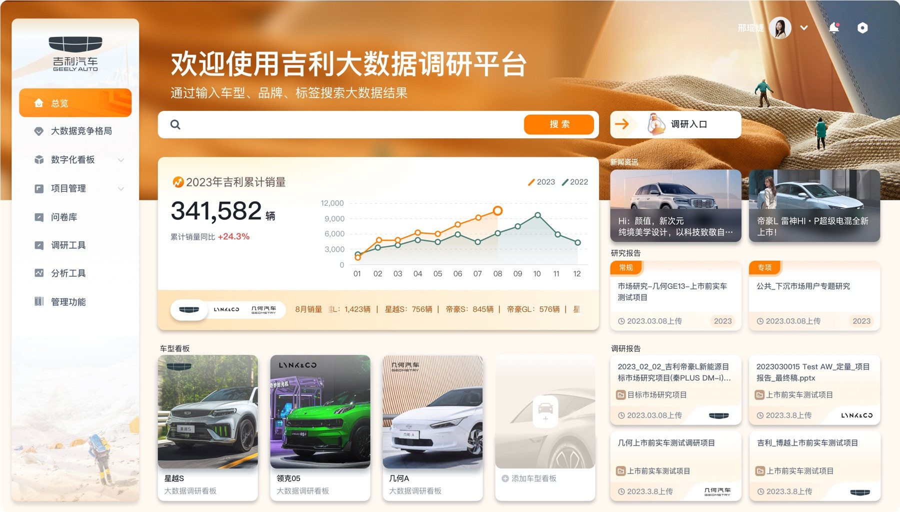

CASE STUDY · DATA RESEARCH PLATFORM
吉利大数据
调研平台
面向汽车市场研究与内部业务团队，整合问卷生产、题库资产、车型数据、品牌健康和产品评价，让调研从“制作与回收”延伸为可持续的数据洞察能力。

01 / PROJECT OVERVIEW
把一次性调研，
沉淀为长期数据资产。
平台需要同时服务调研创建者、数据管理员与业务分析者，并让不同阶段的工作在同一套系统里自然衔接。
设计以“生产—管理—分析”为主线，统一题型编辑、题库复用、车型管理和洞察看板的操作语言；在分析端通过品牌、产品、人群与车型等维度，让复杂数据更容易比较和下钻。
页面中的业务数据为项目设计稿示意内容，部分信息已脱敏。
02 / DESIGN CHALLENGE
既要支持专业调研，
也要降低跨角色协作成本。
平台横跨内容生产、基础数据管理与复杂分析，信息密度高、角色差异大，需要用稳定的结构减少学习与沟通负担。
复杂问卷生产
多种题型、逻辑设置与题库复用需要兼顾编辑效率和结果准确性。
车型资产管理
车型、价格与生命周期数据需要可维护、可追踪，并持续服务分析模块。
多维数据洞察
品牌、口碑、产品和人群数据需要在高信息密度下仍然清晰可读。
03 / EXPERIENCE MAP
从市场全貌进入业务细节，
按分析路径组织核心模块。
先以车型总览建立全局判断，再进入竞争格局与数字化看板，随后延伸到品牌、产品、调研工具和后台管理。
01
VEHICLE OVERVIEW
总览模块：
从车型结果看见全局。
以车型研究结果长页作为平台核心入口，将关键指标、市场表现、价格趋势、用户反馈与细分维度组织在一条连续阅读路径中，帮助用户先建立全局判断，再进入具体分析模块。
02
COMPETITIVE LANDSCAPE
大数据竞争格局：
在多维对比中识别机会。
将品牌、车型、价格区间与市场表现放入同一分析画布，通过筛选、对比和趋势关系，快速定位重点竞品与潜在增长空间。
市场范围筛选
按品牌、车型和细分市场快速限定研究对象。
竞品横向比较
把核心指标放入统一尺度，强化差异识别。
趋势关系判断
结合时间和价格维度理解市场变化。
机会点定位
从密集数据中提炼可行动的业务结论。
03数字化看板：
指标摘要 趋势变化 维度联动
DIGITAL DASHBOARD
数字化看板：
让核心指标一屏可读。
通过指标卡、趋势图和分类数据建立清晰的阅读主线，兼顾管理层的快速扫描与研究人员的进一步下钻。
优先呈现影响当前判断的核心数字。
通过连续时间关系识别异常与拐点。
筛选条件与图表结果保持同步反馈。
04
BRAND HEALTH
品牌健康：
从核心指标进入品牌形象。
品牌首页承担指标总览，品牌形象页继续展示认知分布与评价差异，两者形成从结果到原因的连续分析。
05
PRODUCT & REPUTATION
产品评价与口碑：
理解车型背后的用户反馈。
产品评价、人群分类、口碑与报价走势共同组成产品洞察模块，让团队从产品生命周期、目标人群和市场声音等角度验证车型表现。
06
RESEARCH WORKSPACE
调研工具：
让复杂问卷保持可编辑、可复用。
调研工作区统一题目编辑、题库导入、复杂题型和权限反馈，让问卷生产与内容资产沉淀自然衔接。
07
DATA ASSET MANAGEMENT
车型与用户管理：
支撑平台持续运转。
车型列表、编辑表单、用户权限与题库操作采用统一的后台语言，让管理员能够快速定位对象、确认状态并完成维护。
04 / DESIGN PRINCIPLES
贯穿平台的四个设计原则。
模块众多，但每个角色感知到的都应该是一套稳定、专业、可预测的工作系统。
任务导向的信息层级
围绕当前任务组织工具和数据，避免无关信息干扰。
复杂能力渐进呈现
基础操作优先，高级配置在需要时进入。
图表与明细协同
先通过图表识别趋势，再用明细完成定位与验证。
跨模块语言统一
筛选、表格、表单和状态反馈在全平台保持一致。
05 / SELECTED CORE SCREENS
精选核心页面
覆盖调研生产、题库管理、车型资产和数据洞察等代表性场景；点击任意页面可查看完整设计稿。
PROJECT SUMMARY
让调研不止产出问卷，
更持续产生业务洞察。
本项目将问卷生产、题库复用、车型管理与品牌、产品、口碑分析串联为完整的研究工作流。设计通过稳定的信息架构与组件语言，帮助多角色更高效地协作，也为平台持续扩展新的调研与分析能力建立基础。
返回近期精修案例 ↗